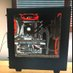

微软 365 全球大规模故障，晚间才出现恢复迹象
24 条帖子，合计浏览 1956 万次
微软 365 从日本时间 13 日凌晨开始在全球大面积故障，Outlook、Teams、Copilot 等服务基本停摆了一整天。到 13 日晚间，微软称恢复进展“令人鼓舞”，NHK 报道亚太部分地区已经恢复，但还没有全面恢复，微软也没有给出完全恢复的时间。
- 影响范围
- 微软在管理中心公告 MO1550821 中确认，Exchange Online、Microsoft Teams、SharePoint Online、Microsoft 365 Copilot 和 Microsoft Defender XDR 可能无法连接，Planner、To Do、Windows 365、云打印等服务也出现问题。Downdetector 上美国的 Outlook 故障报告在日本时间 13 日 3 点 15 分达到高峰，超过 13 万条。日本方面，官房副长官尾崎正直 13 日在记者会上说，这次故障也影响到政府的信息系统。 BleepingComputer、NBC News、Newsweek、时事通信
- 经过
- 微软称故障从日本时间 13 日 3 点 26 分开始，起初只报告美洲的 Exchange Online 邮箱连接问题，后来确认所有地区的用户都可能受影响。在此之前，Teams 在日本时间 12 日 23 点 45 分到 13 日 0 点 53 分已经在美洲出过一次故障，那次已经修复，两者是否有关微软没有说明。到 13 日早上 5 点半，Outlook、Copilot 等服务仍然无法使用。 BleepingComputer、livedoor 新闻
- 原因
- 微软起初说是多个地区的基础设施负载升高，后来查明负载升高与流量增加无关，起因是一批服务器意外下线，剩下的设施承受不住；受影响服务器上的一个核心进程负载过高，导致容量下降。微软还表示，这次故障和上个月宣布的 6 万人裁员没有关系。 微软 365 官方状态账号、BleepingComputer、Yahoo
- 处理措施
- 微软暂停了所有部署，把连接流量分散到全球其他设施，隔离部分基础设施并重启服务器，再逐步恢复流量，还在评估是否回滚少量近期的配置更新。微软承认最初的修复“没有按预期进行”，日本时间 13 日 8 点 57 分前后才开始有部分服务器恢复，当时恢复很有限。 微软 365 官方状态账号、BleepingComputer、BBC
- 恢复进度
- 日本时间 13 日 21 点 09 分，微软称服务可用性和邮件投递在越来越多的设施上改善，但部分用户仍会遇到间歇性问题；为了保住延迟的邮件，邮件超时时间延长到 48 小时，有用户反映积压的邮件陆续到达。NHK 20 点 59 分报道亚太部分地区已经恢复。另有说法不一致：Proactive Investors 在日本时间 13 日 8 点 13 分报道微软状态页面已显示正常，但微软之后的更新仍在说恢复还在进行。 Yahoo、BleepingComputer、NHK、Proactive Investors
补充来源：Massive Microsoft 365 outage disrupts Ou、Global Microsoft outage is ongoing; comp、Microsoft services hit by major outage a
多条帖子称黄仁勋已卸任英伟达 CEO
16 条帖子，合计浏览 683 万次
英伟达董事会在美国时间 12 日（日本时间 12 日深夜）宣布，黄仁勋辞去总裁、CEO 和董事职务，立即生效。此前有报道称他与一名被指为中国情报人员的女性以及一名下属高管有婚外情。CFO Colette Kress 暂代 CEO。
- 公司公告
- Colette Kress 在任临时 CEO 期间继续兼任执行副总裁和 CFO，董事会将从公司内外物色正式 CEO。董事会同时任命曾任 Synopsys CEO 的 Harvey C. Jones 为英伟达历史上第一位董事会主席。公告没有说明黄仁勋离职的原因，黄仁勋执掌英伟达 33 年。 NVIDIA 公告、Al Jazeera
- 起因
- 报道指出的两段婚外情，一段对象是新加坡公司 Megaspeed 的前高管 Alice Huang，她被指曾为中国情报机构工作，Fortune 称她是英伟达的客户，美国情报部门怀疑她是中国情报资产；另一段对象是直接向他汇报的医疗业务副总裁 Kimberly Powell，这是《纽约时报》报道的。 Al Jazeera、Reuters、Fortune、纽约时报
- 经过
- 黄仁勋在美国时间 8 日（周日）承认不忠，向家人和员工道歉。董事会起初表态支持他，并调查他被中国情报机构接近的报道。11 日《纽约时报》报道第二段婚外情，Reuters 报道董事会正在考虑撤换他，12 日他宣布辞职。Reuters 同日的评论文章标题是“丑闻让这位 AI 明星下台”。 Al Jazeera、Reuters、Yahoo Finance
- 市场反应
- 消息传出后，英伟达股价在盘前跌了约 10% 到 11% 以上，美国时间 12 日开盘跌 13%，市值跌破 4 万亿美元，盘中一度跌超 14%。Fortune 指出，英伟达已同意在 Anthropic IPO 的同时参与一笔 260 亿美元的私募，买入约 100 亿美元股份，黄仁勋离职让这次 IPO 更难推进。 Yahoo Finance、Los Angeles Times、Al Jazeera、Fortune
- 各方说法
- 特朗普起初为黄仁勋辩护，之后提议由 Tim Cook 接任。日本官房副长官尾崎正直 13 日表示，政府在关注英伟达的动向。 The Guardian、Al Jazeera、日刊现代
- 下一步
- 英伟达将按原计划在日本时间 18 日约 6 点 20 分公布 2027 财年第三季度财报，7 点召开财报电话会；寻找正式 CEO 的工作也同时进行。 NVIDIA 公告
补充来源：NVIDIA Announces CEO Transition、Why did Nvidia CEO Jensen Huang resign, 、Jensen Huang resigns, CFO Colette Kress
认为游戏显卡占研发预算的 20%，却只贡献 5% 的利润，全靠黄仁勋坚持才没被砍，换新 CEO 按投资回报算账的话，游戏卡会最先被边缘化；帖子没有说明数字来源。
Von System称英伟达内部建议帖收到 1600 多条评论，要求董事会重新考虑黄仁勋的去留，还有员工发全员邮件要求公司解释他离职的原因，帖子没有给出出处。
小谢列出英伟达在台湾有 500 家供应链企业、90% 的 AI 服务器在台湾制造、台积电 20% 的订单来自英伟达，并说连特朗普都在支持黄仁勋，批评台湾官方至今没有表态。
timon
正研究每年最多 2.5 万日元现金给付
4 条帖子，合计浏览 600 万次
高市首相 13 日在参院特别委员会表示，与食品消费税减税配套的新现金给付“就業者負担軽減支援金”在 2027、2028 两个年度先行实施时，基本额每年最多约 2.5 万日元，对象扩大到就业者的一半以上。
- 发放金额
- 最大支给额“支援基本额”每年约 2.5 万日元；低收入者的“定额支援额”每年 5000 日元；“子女加算”每个孩子每年约 5000 日元。夫妻加两个孩子、能领全额的家庭，一年最多合计 6 万日元。 时事通信、共同社
- 发放对象
- 首相表示会研究收入上限，让现役劳动者的 5 成以上能领到，人数在 3000 万以上，男性就业者约 4 成以上可以领到。政府原先的说法是 3 成左右、约 2000 万人。具体的年收入上限，首相没有说。 时事通信、共同社
- 背景
- 这项给付按收入发放，与饮食料品消费税率降到 1% 的法案捆绑，13 日在参院特别委员会进入正式审议，这番说法是回答公明党议员杉久武的提问。执政党在参院不过半，扩大对象是为了回应在野党要多帮中等收入者的要求，争取他们支持法案。 时事通信、共同社
- 财源与问题
- 先行实施的两年大约需要 10 万亿日元，财源如何解决还不明确。共同社指出，对象越多，每人领到的钱越少，真正需要帮助的收入层可能拿不到足够的给付。 福岛电视台、共同社
补充来源：支援金、勤労者５割対象 高市首相表明、子２人世帯で最大６万円、就業者半数以上に現金給付と首相 対象3千万人超、最大2・5万円、支援金対象者「半数以上」に拡大 高市総理が方針示す 最大2.5万円 10兆円財源
2027 年度起五年防卫费拟定在 50 至 60 万亿日元
3 条帖子，合计浏览 23.2 万次
2027 至 2031 年度五年防卫费的规模正在政府内部协调。财务省提出 50 至 60 万亿日元，政府准备以 60 万亿日元规模为目标，远低于部分人设想的 80 万亿日元，防卫省已提醒承包商订单会大幅减少。
- 财务省方案
- 四名知情人士称，财务省官员上周提出，从 2027 年 4 月起五年的防卫费定在 50 万亿到 60 万亿日元。这个数比现行五年计划的约 43 万亿日元多，但远低于部分防卫官员和自民党议员设想、并已用来和承包商谈判的 80 万亿日元。路透日文版称财务省提出的是 50 万亿日元台，一名知情人士说是 50 万亿日元台后段，另外两人说比这还低。 Reuters
- 政府协调
- 共同社 13 日报道，政府开始以 60 万亿日元规模为目标进行协调，理由是再往上加就得大幅增税，政府倾向于避免。防卫省按自己需要的装备和体制简单估算，原本是 70 万亿到 80 万亿日元。两个数字的差别来自不同阶段：50 万亿至 60 万亿是财务省提出的范围，60 万亿是政府随后调整的方向。 共同社、Reuters
- 对订单影响
- 官员已提醒国内外承包商，部分导弹和飞机的采购量可能最多减半，其中包括美国制造的 F-35 隐形战机。 Reuters
- 起因
- 主要原因是财政紧张：饮食料品消费税减税挤压财政，一边减税一边讨论增税很难开口，政府还打算把税外收入用于成长投资。另外有人在讨论把经济安全保障等相关预算也算进防卫费。 Reuters
- 下一步
- 五年总额将写进年底修订的安保三文件之一“防卫力整备计划”，外界关注政府会如何调整“含相关经费占 GDP 2%”的现行目标。新计划的重点是大量采购无人机，并储备长期作战所需的弹药和导弹。专门支援退役自卫队员的“退職自衛隊員・家族支援庁”可能暂不设立；向盟国施压要求增加军费的特朗普政府能否接受这个规模，目前还不明朗。 共同社
补充来源：Japan warns arms suppliers of deep cuts 、防衛費、5年間で60兆円規模 政府調整、大幅増税を回避へ、防衛費70～80兆円案に財務省が慎重姿勢 次期5年計画に50兆円台を提示
高市首相下周访菲律宾和中国，出席 ASEAN 与 APEC
5 条帖子，合计浏览 33.5 万次
日本政府 13 日正式宣布，高市首相 16 日至 19 日访问菲律宾和中国，出席 ASEAN 相关首脑会议和 APEC 首脑会议，四国机制 QUAD 的首脑会议也在协调，计划 17 日在菲律宾召开。这是高市就任首相后第一次访问中国。
- 行程
- 17 日在马尼拉出席日本与 ASEAN 首脑会议和东亚峰会（EAS），与菲律宾共同主持“亚洲零排放共同体”（AZEC）首脑会议，与越南共同主持日本与湄公河国家首脑会议。19 日在深圳出席 APEC 首脑会议，议题包括贸易投资、区域经济一体化、能源韧性、数字经济和 AI。 TBS、每日新闻、Straits Times
- QUAD 会议
- 政府称正在协调 17 日在菲律宾召开日美澳印 QUAD 首脑会议，高市首相出席，预计会针对在军事和经济上加大施压的中国，讨论地区局势。 时事通信、日经
- 对美沟通
- 多名日美关系人士称，日本已向美方提出，希望在 ASEAN 会议期间安排高市与特朗普对话。原因是外界传出 APEC 期间可能举行美中俄三国首脑会谈，特朗普与习近平今年第三次双边会谈也在预期之中；日方担心特朗普在中期选举共和党大败后急于拿出外交成果，过度靠近中俄，因此想事先传达日本的立场，并展示日美同盟的牢固。 共同社
- 对华关系
- 日中关系冷淡，高市在中国期间能否与习近平国家主席对话，是这次出访的焦点。 时事通信
- 官方表态
- 官房副长官尾崎正直表示，日本将借这些会议表明立场：在升级版的“自由开放的印太”（FOIP）框架下，强化各国的自主性和韧性，推动具体的援助与合作，一起变得强大富裕。 TBS、每日新闻
补充来源：Japan, Other Quad Leaders Likely to Meet、高市総理 今月16日からフィリピンと中国を訪問へ ASEAN・APEC首脳会議に、首相、トランプ氏との対話打診 米中ロ前に日本の立場伝達
批评首相向特朗普请求对话的做法像“向爸爸妈妈哭诉的幼儿园小孩”，希望停止这种外交。
Baron Lepoussin＜ひよこ男提到去年 ASEAN 是高市的外交首秀，认为她当时的英语口音很差，预计今年不会用英语演讲。
ケン
Google 全面开放 Gemini 4 Hydrogen
8 条帖子，合计浏览 93.8 万次
Google 于日本时间 12 日发布 Gemini 4 Hydrogen，面向所有用户开放，同时在 Antigravity 推出 Orchestrator 功能，把 Carbon 或 Argon 和 Hydrogen 放进同一个会话里分工完成任务。
- 开放范围
- Hydrogen 已在 Google AI Studio 全部等级、Gemini API、Gemini for business、Gemini App 和 Google 搜索中上线；Antigravity 里面向付费的 Google AI Pro 和 Ultra 订阅用户开放。 Google 官方博客
- 模型定位
- Google 把 Gemini 4 Carbon 和 Argon 定位为擅长长程深度推理的前沿模型，Hydrogen 主打快速执行日常编码和智能体任务。单独使用 Hydrogen 时，可以选 low、medium、high（默认）和新增的 xhigh 四档思考深度。 Google 官方博客、Antigravity 官方博客
- Orchestr
- Carbon 先在只读阶段梳理依赖、厘清歧义，制定带有重新规划条件的计划；Hydrogen 接手改代码、更新依赖包、跑测试；Hydrogen 卡住时再交回 Carbon 检查状态、修正计划后继续执行。 Antigravity 官方博客、Google 官方
- 测试数据
- 官方博客写的测试是 Terminal-Bench 4.1（原摘要写的是 4.0）：Orchestrator 的任务成功率接近单用 Carbon，额度消耗平均少 24%，完成速度平均快 19%。Hydrogen 单独使用时，Artificial Analysis Intelligence Index 得 51 分，高于 Argon 的 50 分，最高设置下 54 分；Terminal-Bench 4.1 得分 57%，Gemini 3.8 Flash 是 18.2%。 Antigravity 官方博客
- 订阅区别
- Ultra 用户可以用 Orchestrator (Carbon) 和 Orchestrator (Argon)，付费 Pro 用户只能用 Orchestrator (Argon)，以后会支持更多模型和套餐；企业用户可以通过 Gemini for business 使用 Hydrogen 和 Orchestrator。 Antigravity 官方博客
补充来源：Gemini 4 Hydrogen and Orchestrator、Introducing Gemini 4 Hydrogen for Agenti
有用户称都心二手公寓降价增多、成交变少
9 条帖子，合计浏览 5.7 万次
几位关注公寓市场的 X 用户发帖说，东京都心和湾岸的二手公寓降价越来越多，成交越来越少。这些都是个人账号的观察，没有官方统计。
- 湾岸数据
- 一位用户转述本周湾ナビ的邮件：新挂牌 53 套，降价 181 套，成交只有 9 套，是第一次降到个位数。 X 用户
- 降价名单
- 另一位用户的每日价格变动汇总显示，三田ガーデンヒルズ、パークマンション等品牌公寓都在都心三区的降价名单上。有用户认为，都心二手公寓的行情整体还没见底，原因是买家太少。 X 用户
- 具体房源
- エフローレ日本橋从 14,980 万日元降到 9,980 万日元，已在 SUUMO 上架。シティタワー武蔵小杉 33 层一套 70.01 平米、朝东的 3LDK 报价 1.28 亿日元，每坪 604 万日元，发帖人称这是他看到的最低价。ミッドスクエアタワー 40 层一套朝东 77.67 平米的房源，每坪 288 万日元。 X 用户
- 其他地区
- 有用户说虎ノ門一套明和地所收购后翻新转卖的房源，每坪单价快要跌破 1000 万日元；还有用户列出龟户每坪 623 万日元、晴海每坪 484 万日元的报价。 X 用户
财务省方案拟废除 70 岁以上医疗费“特例”
2 条帖子，合计浏览 3.8 万次
财务省 4 日在财政制度等审议会上提出，废除 70 岁以上门诊自付费用的“外来特例”，并把高龄者窗口负担改为“原则 3 成”。保団連等方面强烈反对。自民、维新两党实务者 13 日开始研究窗口负担怎么改，计划年内拿出结论。
- 财务省方案
- 财务省在 11 月 4 日的财政审上提出，有一定负担能力的人群窗口负担应以“原则 3 成”为目标，外来特例应当废除。理由是只差一岁负担就差很多：同样年收入 300 万日元的单身者看门诊花 20 万日元，69 岁的人自付 6 万日元，70 岁的人受特例保护只付 2.2 万日元；而且高额疗养费制度本身已经有月度上限、多次该当和年度上限。 朝日新闻、LIMO
- 特例现状
- 外来特例面向 70 岁以上、年收入约 370 万日元以下的人，按个人设定门诊自付的月度和年度上限。一般收入层的月上限今年 8 月从 1.8 万日元提高到 2.2 万日元，年上限从 14.4 万日元提高到 21.6 万日元；2027 年 8 月起，年收入约 200 万日元以上的人月上限再提高到 2.8 万日元。厚劳省资料显示，适用特例的约 2530 万人中，每年至少用一次的约 630 万人。 弁護士JP新闻、LIMO、日刊现代
- 反对意见
- 保団連 12 日公布 10 月 30 日到 11 月 9 日做的问卷：约 65% 的人说医疗费负担增加了，其中 57.3% 减少了就诊或治疗；年收入 200 万日元以下的人里，59.4% 减少就诊，62.8% 动用存款。保団連引用厚劳省自己的估算：一名年收入约 210 万日元、同时治疗胃癌和转移性肺癌的 70 多岁男性，按 2 成负担一年要付约 46.6 万日元，7 月前有特例年上限时只需 14.4 万日元。日本医师会会长也反对把窗口负担提高到原则 3 成。 弁護士JP新闻、日刊现代、NHK
- 执政党进展
- 自民、维新两党实务者 13 日决定，研究范围包括扩大“收入与在职者相当、负担 3 成”的对象，并开始整理具体论点；两党计划年内对窗口负担的调整拿出结论，政府也要在 2026 年底前制定改革工程表。 NHK、朝日新闻、LIMO
补充来源：「年収210万円で46万6000円払えますか」70歳以上の医療費「特例」廃止の財、高齢者の窓口負担「原則3割」「外来特例廃止」 医療費で財務省主張：朝日新聞、【70歳以上の外来特例の上限】2026年8月から一般区分は月「2万2000円」・
值得单独看的帖子
- 斯坦福 Agent 课公开视频与作业
斯坦福新研究生课 CS329Z《Engineering AI Agents》开始在 YouTube 更新讲座，第一讲已上线。作业一要求只用聊天 API 从零写一个类似迷你 Claude Code 的 Agent 外层程序，作业二用 Harbor 设计 Terminal-Bench 风格的评测任务，两份作业的仓库都已公开。
Tao Wang，赞 493 - Opus 5.5 日常使用技巧
介绍 Anthropic 官方博客的建议：把 Opus 5.5 当日常主力模型，提示词里的“think hard”可以删掉。具体做法包括默认用中等推理强度，直接说明目标和交付物，直接让它生成文档、表格、PPT 成品；博客还认为单价虽高，步骤和返工少的话总成本可能更低。
Xudong Han，赞 27 - Browser Use 一年半的教训
作者团队花一年半让 AI 操作浏览器，把网页结构（DOM）压缩到极致，测试了几百种架构，后来模型的进步推翻了这些设计。帖子附有完整文章链接，具体经过要看原文。
潦草学者 Scholar.L，赞 52 - 外国人年金缴纳率报道被指误导
Yahoo 新闻刊登的报道称外国人国民年金缴纳率为 55%，发帖人认为这篇报道有恶意。他列出加入日本年金的外国人有 318 万人，其中 201 万人从工资里直接扣缴，27 万人作为被扶养者不需要自己缴费，这条是三条连帖的第一条。
竹内幸一，赞 75 - 有用户称无印良品明文存卡号
被引用的帖子带着 #WBS 标签，称无印良品用明文保存信用卡号；发帖人还称卡号被当作数据表的唯一 ID 索引。两条帖子都没有附报道链接，细节无法从帖子确认。
Megabits，赞 23 - 国交省研究自动驾驶 1 起事故即召回
自動運転ラボ报道，国土交通省正在研究，自动驾驶车辆即使只发生 1 起事故也要召回。帖子只有标题和链接，具体条件要点开文章看。
自動運転ラボ，赞 1,125 - 结婚育儿赠与税优惠拟废除
日经报道，父母或祖父母一次性给子女、孙辈结婚育儿资金时，每人最多 1000 万日元免税的制度将被废除。这项制度的资金用途受限，2025 年只有 219 件使用。
日本経済新聞 電子版，赞 852 - 自卫官加薪修正法成立
日经报道，提高自卫官工资的修正法已经成立，高中毕业入队的“2士”终身工资将超过 3 亿日元。
日本経済新聞 電子版，赞 4,231 - 日元一度跌至 160.03
47NEWS 速报，日元一度跌到 1 美元兑 160.03 日元。发帖人认为，政府欠下美国的人情做了汇率干预，却没能把日元拉回 140 日元区间，又不听 Bessent 停止再通胀政策的要求，结果再次跌到 160 日元台。
蓼丸ガネメ，赞 3,551 - 有用户称 5090 降了 24 万日元
发帖人称，Palit GameRock 32GB 版 RTX 5090 从 128.8 万日元降到 104.8 万日元，PNY 16GB 版 RTX 5080 从 35.98 万降到 29.98 万，11 月起开始降价。他也提到一年前 5090 约 40 万、5080 约 26 万日元，帖子没有写是哪家店的价格。

じん，赞 408，含图